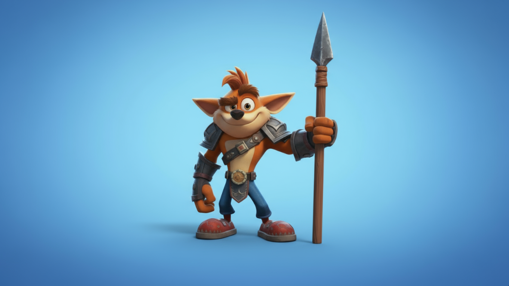
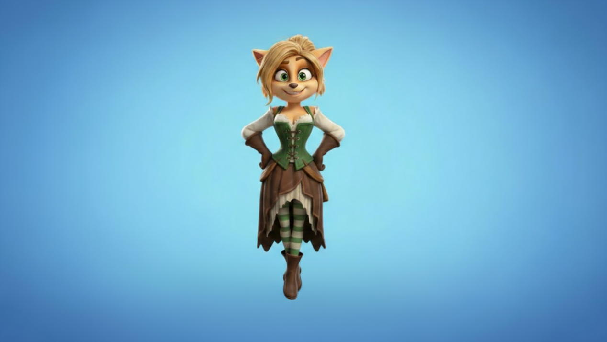
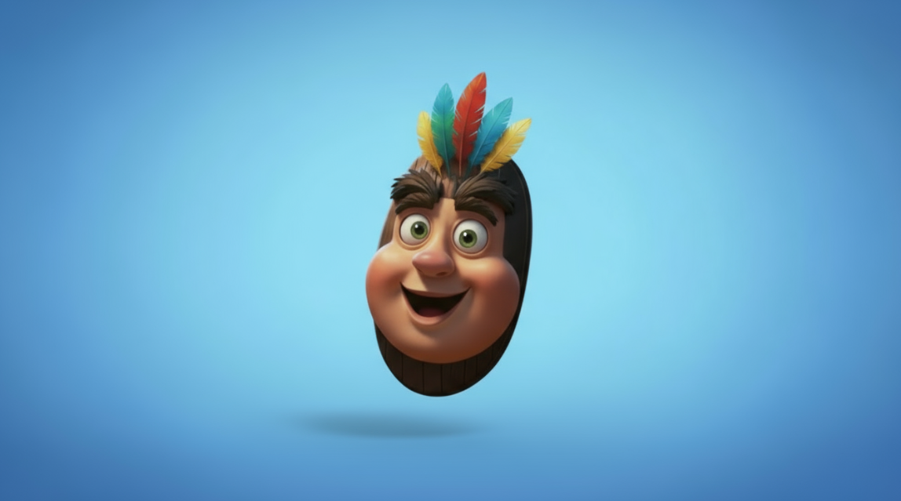
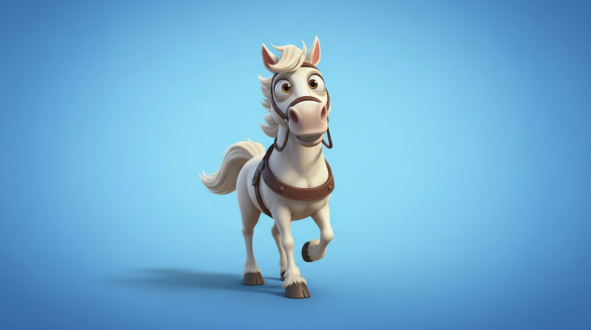
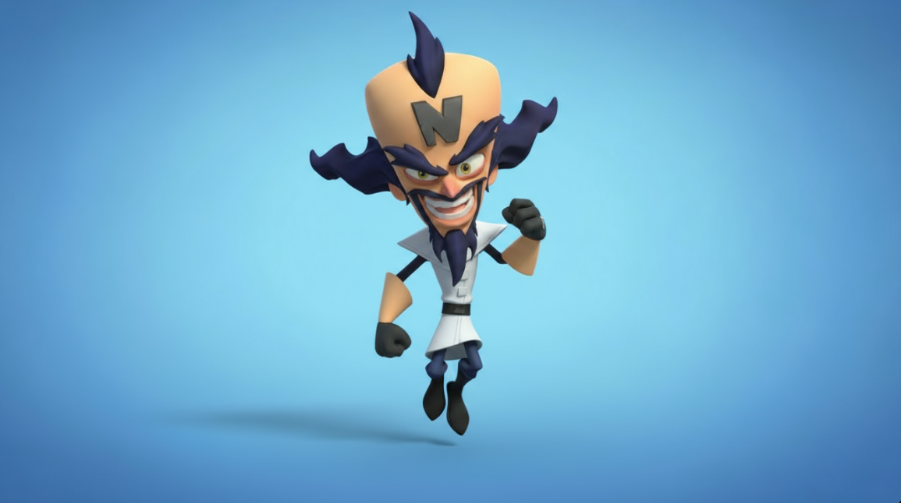
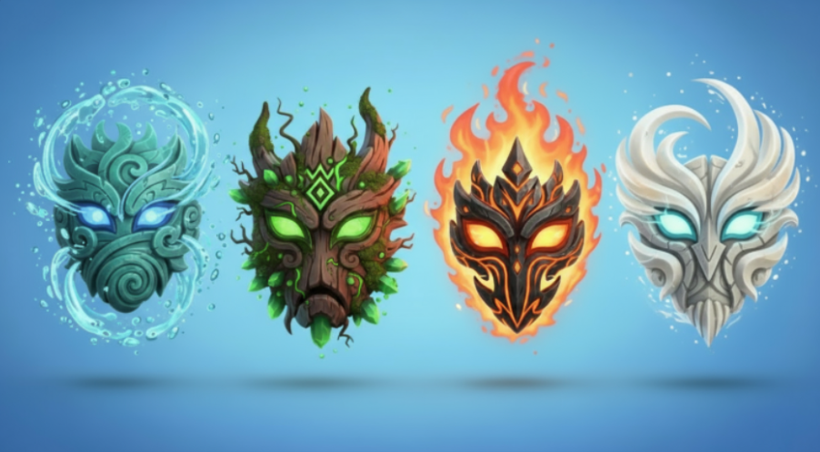
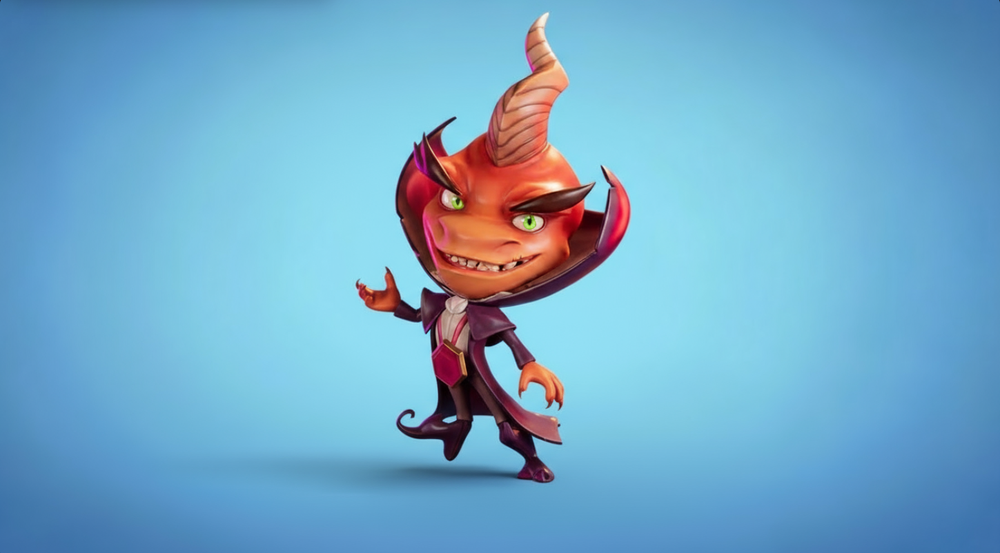

🎭 Personaggi 🐴
Conosci tutti i personaggi, eroi e nemici che fanno parte di questa avventura!
Eroi

Don Bandicoot
Protagonista
Don è un cavaliere originario della famiglia dei Bandicoot, intraprendente e sempre in cerca di avventure.
Nulla lo può fermare…forse…

Dulcinawa
Fidanzata di Don Bandicoot
Dulcinawa è una graziosa ragazza di origine Bandicoot, fidanzata con Don e con una vita bellissim-... ah no, si trova rinchiusa nei mulini del perfido Dr. Mulinex, e sarà compito tuo liberarla!

Sancho Aku
Guida di Don Bandicoot
Sancho è una maschera delle isole Wumpa, cerca sempre di aiutare il protagonista come può, ma per poter apparire deve essere trovato nelle casse….anzi, per questa avventura Sancho Aku sarà un personaggio sempre abilitato!

Ronzinante
Fidato Destriero
Solitamente questo personaggio è un cavallo magro e minuto, ma per questa incredibile avventura è stato potenziato come un potente destriero muscoloso e scattante.
Nemici

Dr. Mulinex
Antagonista Principale
Perfido dottore, per questa avventura si è impossessato di tre mulini per creare la sua base operativa.
Necessita delle Gemme delle isole Wumpa e per questo ha rapito Dulcinawa come ostaggio per far fare il lavoro sporco a Don.
Riuscirà a portare a termine il suo piano ?!

Elementals
Boss Livello 1
Maschere degli elementi, a differenza di Sancho Aku queste maschere sono al servizio dell’Isola.
Controllando gli elementi di aria, terra, acqua e fuoco e cercheranno di ostacolare Don Bandicoot in ogni modo per difendere la Gemma della giungla.

Ripto
Boss Livello 2
Creatura antica delle Wumpa, si è evoluta e ha appreso le arti oscure della magia.
Con il suo bastone magico alimentato dal fuoco delle profondità dell’isola cercherà di difendere la Gemma della muraglia.